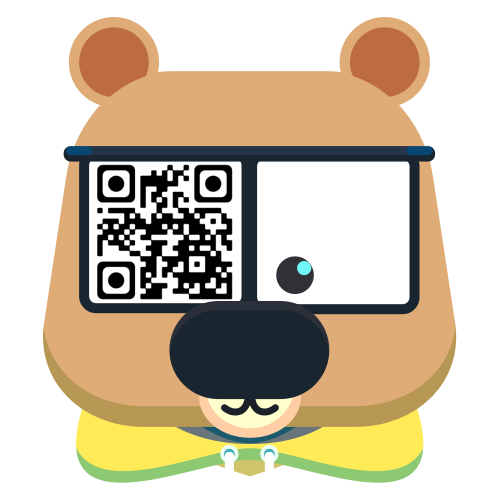

Study Bear
- 1. press start
- 2. allow camera when prompted
(if error shows, try opening https://studybear.me on a different browser!)
iOS: Safari preferred
- 3. hover over sticker in good lighting
(the black border cannot be obstructed either)
- 4. observe one focused boi in the academic wilderness
- 5. feel free to share any additional stickers!